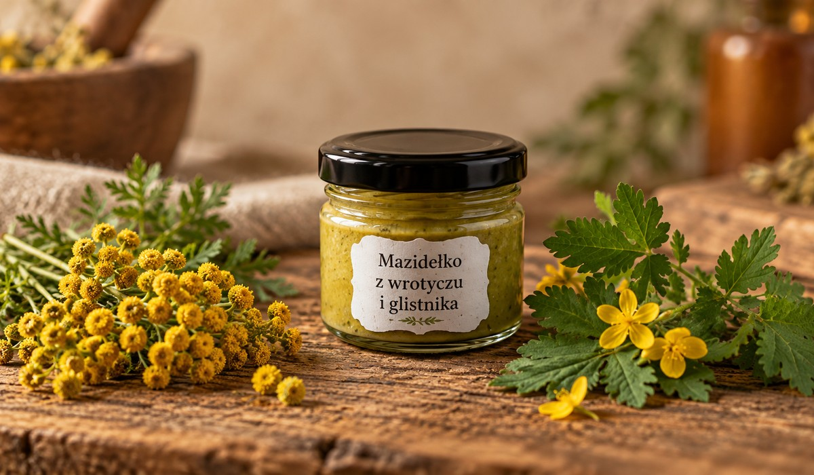
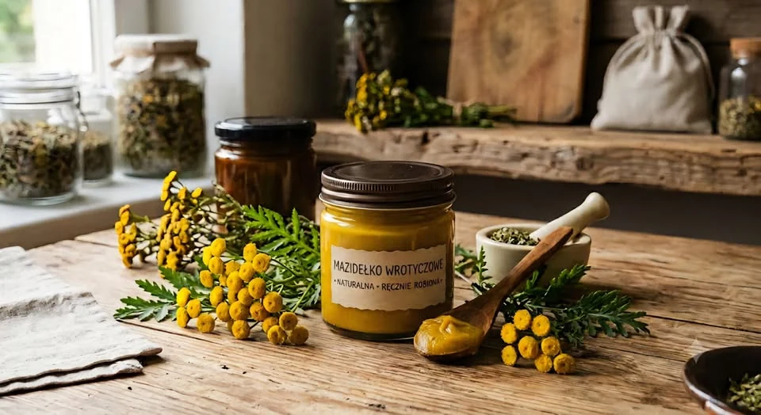
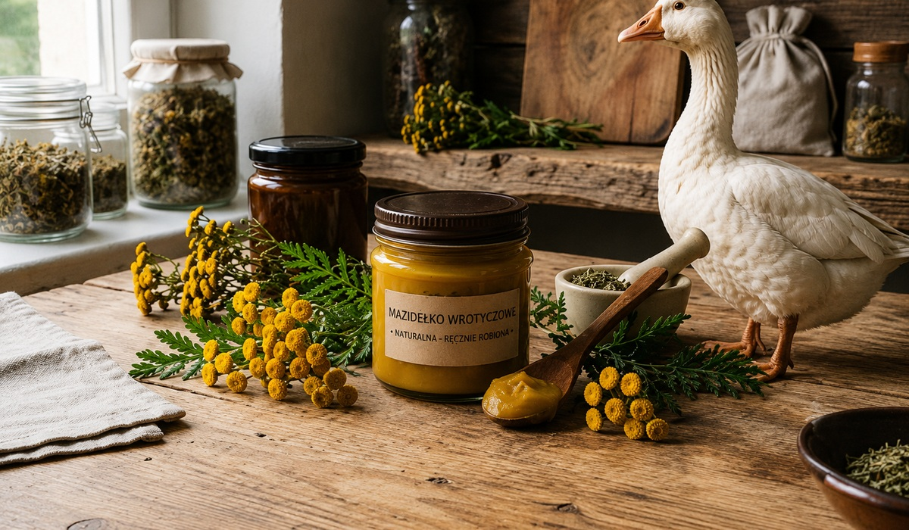
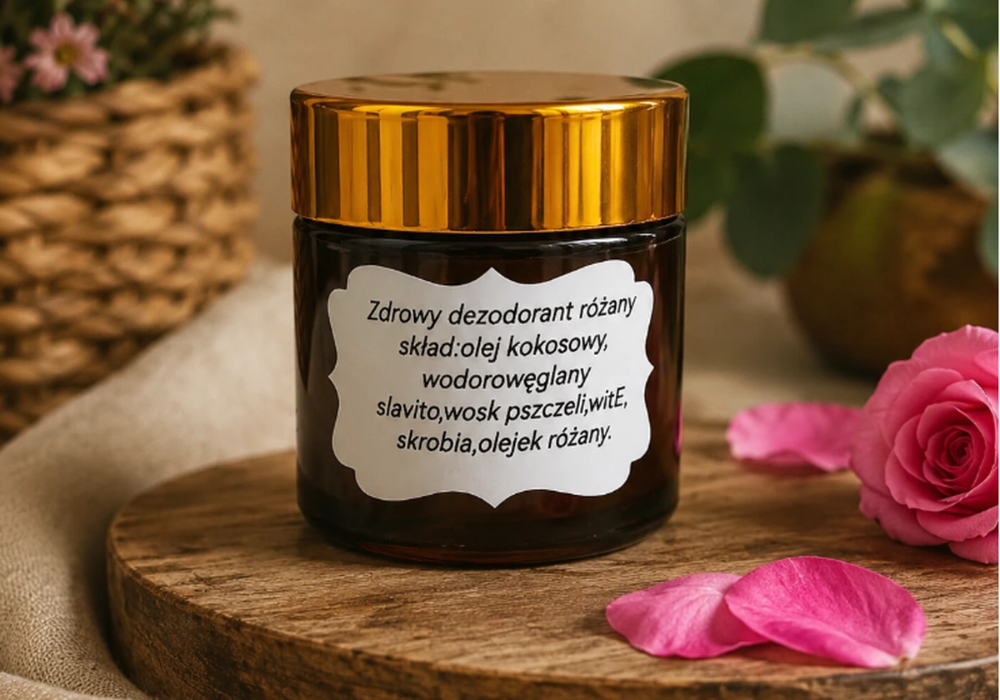
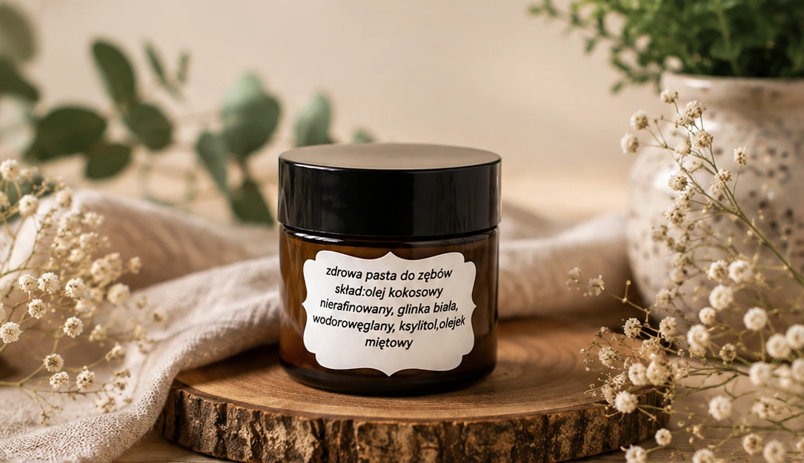
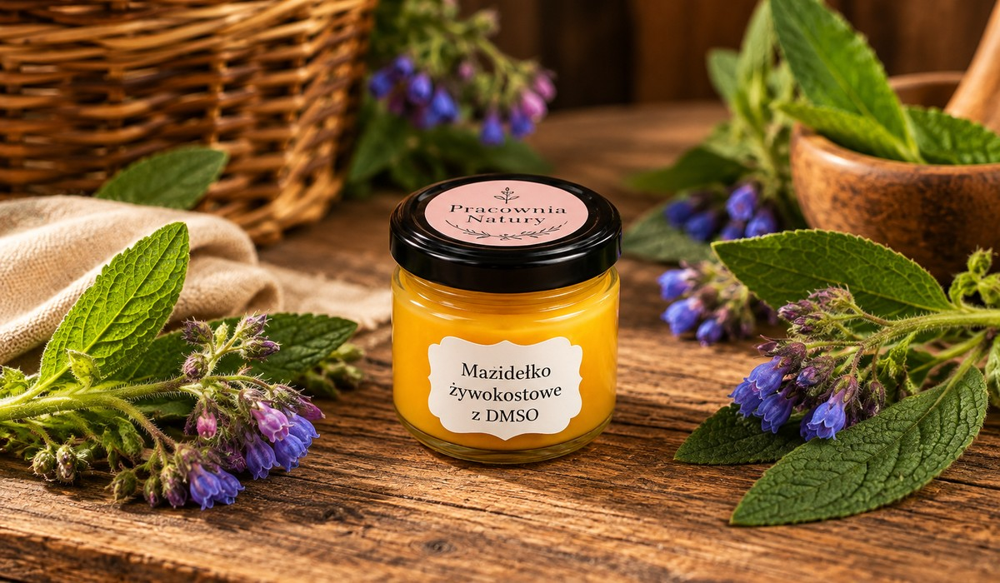
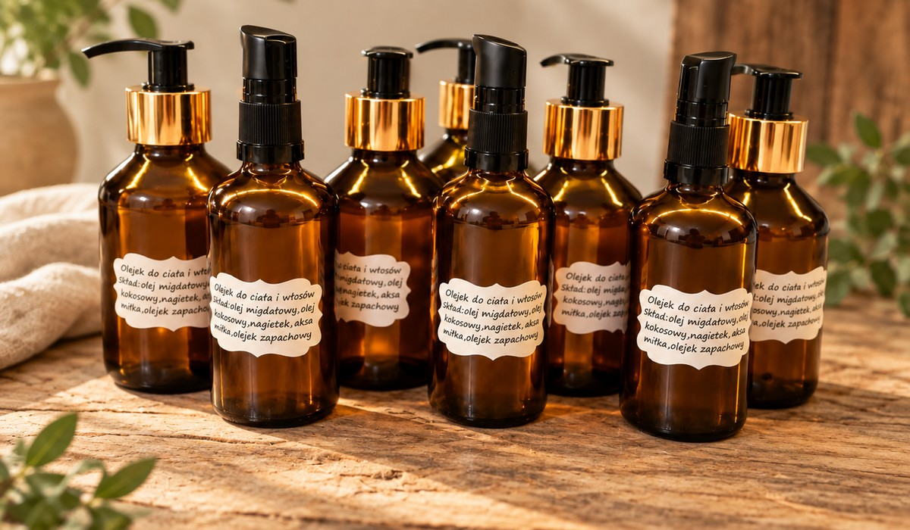

wyrób Pracowni
Mazidełka z wrotyczu, glistnika i żywokostu, różany dezodorant, pasta do zębów bez fluoru i olejek do ciała i włosów. Proste składy, ręczna robota, małe partie. Wybierz wyrób, sprawdź opis i cenę, a następnie dodaj go do koszyka.






